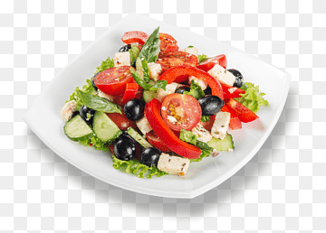

Caprece Salad

Caprese salad is a typical Italian recipe created on the island of Capri, as the name
itself suggests. Between the famous Faraglioni and the well-known Via Krupp, a fresh
Caprese salad is a must at lunchtime.
although we know where it came from, the exact origins of the recipe are still unclear. Some
suggest that it was prepared in a Capri restaurant in the 1920s to promote the futuristic
vegetarian cuisine of Filippo Tommaso Marinetti's Manifesto, which called for eliminating
pasta in favor of lighter flourless dishes with smaller portions.
According to popular belief, Caprese salad was created for King Farouk of Egypt who wanted
to eat "something fresh" after a day at the beach. Although the origins of this dish are s
till controversial, the flavor of Caprese salad continues to shine on tables in Italy
and around the world.
Ingrdients
- 2 units of plum tomatoes
- 150 grams of Mozzarella
- 20 fresh basil leaves
- 1 teaspoon salt
- 1 pinch of black pepper
- 1 tablespoon extra virgin olive oil
Steps
- To make this caprese salad we must prepare all the ingredients.
- For this Italian salad, I advise you to choose plum tomatoes because they don't expel as much juice.
Cut the tomatoes into slices, neither too thin nor too thick, and reserve.
- We take the mozzarella cheese and cut it into slices similar to those of the tomato. We booked.
- On the other hand, to season this exquisite caprese salad, we make a preparation with a few
leaves of chopped fresh basil, extra virgin olive oil, salt and freshly ground black pepper.
Another totally valid option is to season the salad with homemade pesto sauce.
- Finally, for the presentation of the salad, we take a plate or a flat dish and we
arrange the ingredients, inserting a slice of tomato, a slice of mozzarella, a fresh
basil leaf and so on. Dress with the preparation made previously and sprinkle with a
touch of freshly ground peppercorns to complete the decoration of this delicious and
irresistible caprese salad.